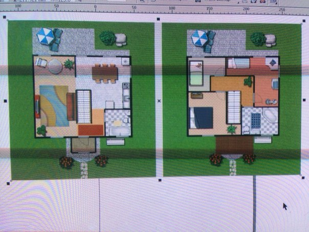

Как создать в программе Corel Draw X6 план дома с ландшафтом на подобии данного примера?
Inja / 25.10.2013, 00:11
Форум:
Версия программы:
16.3.0.1114 (sp3)
Как создать в программе Corel Draw X6 план дома с ландшафтом на подобии данного примера?
Меня очень озадачили и попросили создать подобное изображение и именно в этой программе.
Что делать и как это делать?
План дома и прилегающего ландшафта
Выпрямляете если требуется изображение (растровые изображения выпрямить) если требуется так чтобы вертикальные линии были вертикальны, а горизонтальные горизонтальны, блокируете его (клик правой кнопкой мыши и соотв. пункт) чтобы оно никуда не делось, а далее инструментами Кривые Безье, прямоугольник, линия через 2 точки (если понадобится и так удобнее) рисуете контур, который потом раскрашивается при помощи интерактивной заливки.
Примерно так можно получить то что на примере. Если создаете "с нуля", то те же инструменты, но уже рисуете сами, не обводя имеющееся
Спасибо за Ваш ответ! Я хотела узнать, есть в программе библиотеки объектов для планов - кусты, деревья, мебель? Также интерьерные текстуры. Все это есть в программах, предназначенных для работы с интерьерными планами, а вот есть что-то подобное в Corel Draw?
Библиотек таких объектов (да еще чтоб с динамически изменяемыми параметрами, как это бывает в спец. программах) в CorelDRAW нету. Возможно что-то найдется в стандартном кореловском клипарте (присутствует на всех официальных дисках с дистрибутивом программы)
Можно правда попробовать позаимствовать эти объекты из библиотек тех самых программ через экспорт (в PDF, например, или еще каком-нибудь понятном для CorelDRAW формате, или даже в виде растровых элементов) если уж заказчику непременно хочется в Корел.
Разумеется при наличии определенных навыков можно создать все с нуля и в самом редакторе. Только стоить такая работа по идее должна дороже, чем при расстановке готовых элементов. А еще лучше сделать все с помощью более подходящего программного обеспечения, объяснив заказчику, что его пожелания - это все равно, что требование набрать страничку текста, но не путем печати символов готового шрифта в текстовом редакторе, а методом рисования отдельных буковок в Фотошопе. Ничего невозможного или противозаконного в этом нет, но: а) не у всех получится, б) не у каждого заказчика хватит денег оплатить такую работу)))
Спасибо большое за ответы. Я сама была очень удивлена подобной просьбе, т.к. времени на создание такой работы именно в Corel Draw потребуется в разы больше, чем в любой другой, для таких планов предназначенной программе. Просто я думала, что что-то пропустила и не знаю, что Corel теперь обладает библиотеками элементов интерьера и с легкостью позволяет отрисовать план и оснастить интерьер обстановкой внутреннего и внешнего убранства.